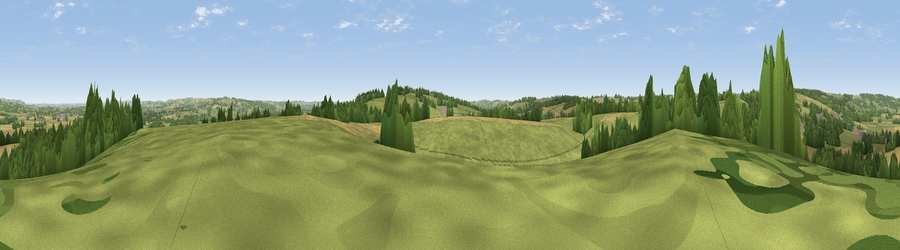

Viewpoint near Donnington
#29625 in England · top 64% of its area beats it · near DonningtonWhere it is
The exact computed spot (SP 18675 28275). Click the marker for map links.
The view, rendered

A 360° render of this exact spot computed from the terrain model, tree cover and land cover — summer colours, afternoon light, calibrated against photographs of famous viewpoints. Real trees, hedges and buildings will differ in detail.
The panorama
Grey silhouette: terrain skyline in each direction (720 bearings, Earth curvature and refraction included). Dashed green: skyline with trees (+15 m) and buildings (+8 m) as obstacles. Blue strip: how far the ground is visible on each bearing.
Where the view opens
Wedge length = distance to the farthest visible ground on that bearing (vegetation-aware). Rings at 10, 25 and 50 km.
What fills the view
60% grassland · 24% cropland · 15% woodland · 1% built-up
Angular shares of the visible panorama (visual magnitude), not map area. Landscape diversity 0.43 (0–1 Shannon).
Key numbers
More beautiful places nearby
The staircase of upgrades: each row has a higher view potential than everything closer. Driving times are estimates from straight-line distance, calibrated against real road routing — check an actual route before setting out.
| Place | Direction | Drive | Score |
|---|---|---|---|
| Viewpoint near Stow-on-the-Wold | SSE · 2 km | ~5 min | 49.5 |
| Viewpoint near Icomb | SSE · 6 km | ~12 min | 63.9 |
| Viewpoint near Little Compton | ENE · 10 km | ~19 min | 67.2 |
| Seven Wells Hill | NW · 10 km | ~19 min | 67.6 |
| Broadway Hill | NW · 11 km | ~20 min | 77.7 |
| Cleeve Hill | W · 20 km | ~34 min | 79.8 |
| Nottingham Hill | W · 21 km | ~35 min | 80.9 |
| Bredon Hill | WNW · 26 km | ~42 min | 83.0 |
51.95266, -1.72967 · source: screening · position refined by local search. Computed location — check access rights before visiting.